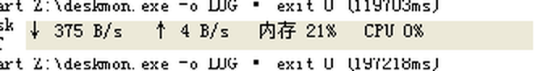
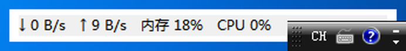

Single-exe desktop utilities built with quickwin — TypeScript in, one .exe out.
Always-on-top desktop gadget: network speed, memory and CPU usage, refreshed every second. Drag anywhere on the window; right-click the tray icon to toggle topmost or exit. Closing the window just hides it to the tray.

